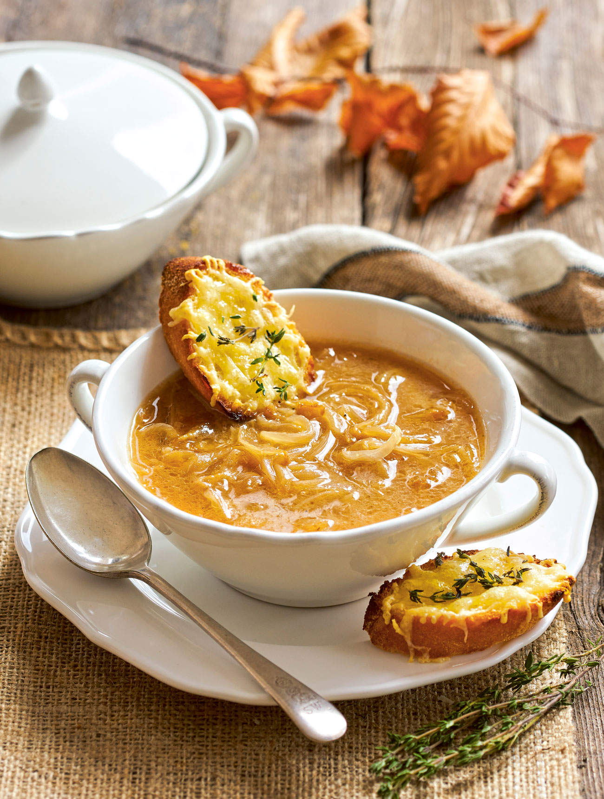

Ingredientes
- 3 cebollas grandes
- 50 g de mantequilla
- 1 litro de caldo de carne
- Pan duro
- Queso rallado
Instrucciones
- Corta las cebollas en tiras finas.
- Dóralas con mantequilla.
- Agrega el caldo y cocina durante 30 minutos.
- Antes de servir, añade pan tostado y queso rallado.